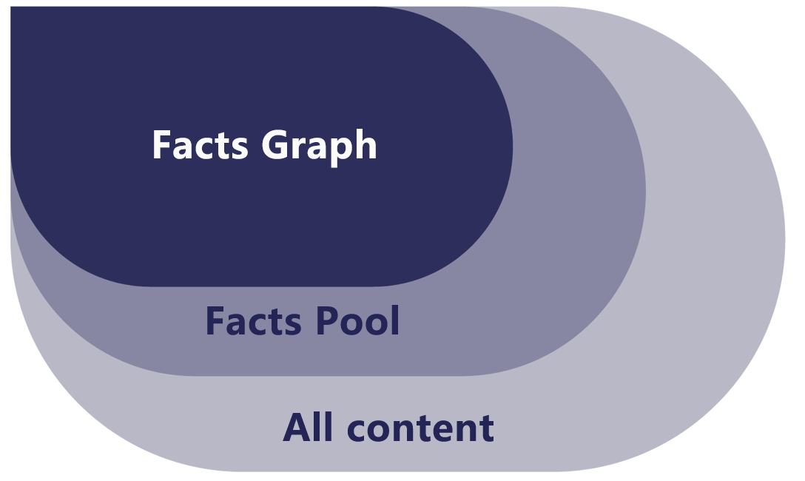
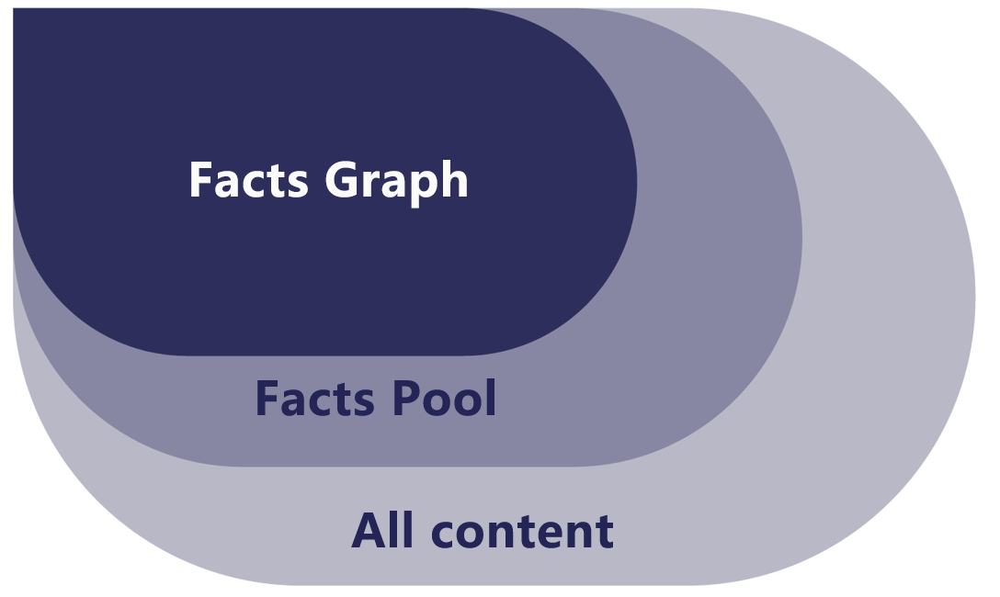
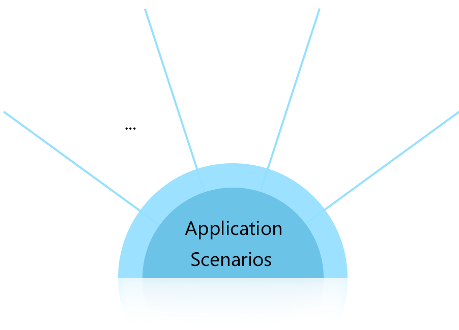
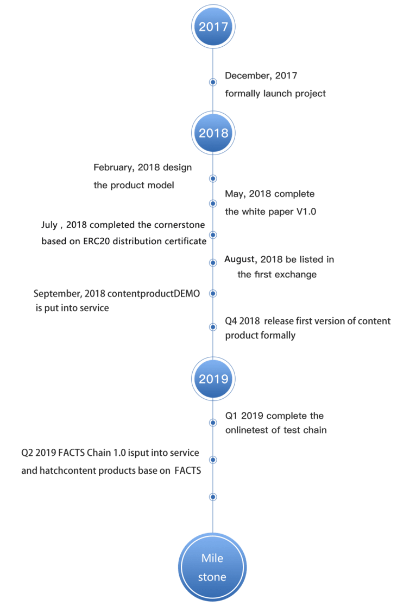

Content multi-version collaboration FACTS introduces the idea of version, namely, users can perfect themselves and other's contents consecutively and record the new generated contents in the blockchain with a new version number.
FACTS Index According to the relevance and rationality, combined with the perfection of the content, the rationality of the reference, the interaction and correction of the user, the correlation index of the current content and the cited content, and the evaluation index of the authenticity of the article. . The fact index reflects the authenticity and reliability of the content to a large extent, providing a powerful reference for users.

Content directory tree FCATS solves the problem of automatic classification and aggregation of content through deep learning algorithm, converts the paragraphs into word vectors, and automatically extracts the content features and automatically aggregates the content using the classification model of deep learning network such as CNN / RNN. The function is approximated in the content tree.
FACTS Rank After the factual content references each other to form a content grid structure, we can determine the fact weight of the content through the mutual link relationship of the content. The FACTS ranking is ultimately reflected in a comprehensive rating of the relevance and importance of factual content.
 

The fact pool refers to the aggregation of all content after the Content Review Panel has voted. A fact map is the content of a grid structure that is stored by a pool of factual content after being built based on artificial intelligence techniques. The factual content pool also has a grievance mechanism to ensure the authenticity of the content and the ability to clean itself.


